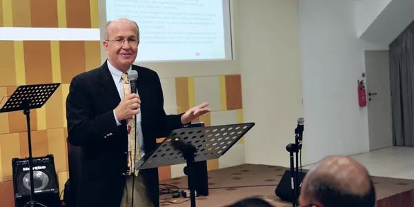

AI and the Copernican Revolution in Intelligence
How AI joins Copernicus and Darwin as a revolution that changes where humans think they stand, and what that means for how we understand ourselves.
Speaking and media

Talks, classes and keynotes on AI, ethics and human identity for churches, universities, and business and civic leaders. Clear explanations of how AI works, honest about its limits, and grounded in what it means to be human.
Signature talks
Each can be shaped for a keynote, a single session or a multi-week class.
How AI joins Copernicus and Darwin as a revolution that changes where humans think they stand, and what that means for how we understand ourselves.
What machines can and cannot do, and why the difference matters for faith, relationships and what we teach our children.
A clear-eyed briefing on where generative and agentic AI are heading, and the human judgment leaders still have to supply.
How AI can strengthen teaching in the humanities, including custom chatbots that bring historical voices into the classroom.
Upcoming
Frontiers of Brain Health lecture series, Center for Brain Health, University of Texas at Dallas
Leadership First Alumnae Symposium, First UMC Richardson
The Fellowship Class, Highland Park UMC, 9:30 am
World Parish webinar (online)
Recent
Interdisciplinary AI Network, University of Birmingham, UK
The Forum at Park Lane, Dallas
SMU Center for Faith and Learning interfaith panel
Highland Park, University Park, Lovers Lane, Lake Highlands and First UMC Richardson; Christ the King Lutheran; UMC Women of Faith regional gathering; Preston Hollow Men's Fellowship
Dallas civic and business leaders, The Thanksgiving Foundation, hosted by Kyle Ogden
Beijing Academy of Educational Sciences, at SMU
Dialogue Dallas
SMU Industrial Advisory Council, Moody Graduate School
Dialogue Institute of Dallas
European Conference on Arts and Humanities, London
Conference on Teaching and Learning with AI, Orlando
Conference of the Professionals, Scottish Rite Hospital, Dallas
SMU Provost's Symposium on AI
SMU Town and Gown Symposium
BigBang! Conference, Social Venture Partners Dallas
Questions
Congregations and adult Sunday school classes, universities and faculty groups, business and civic leaders, and interfaith audiences. Recent hosts include SMU's Industrial Advisory Council, the University of Birmingham, the Center for Brain Health at UT Dallas and many Dallas-area churches.
Both. He speaks in person across North Texas, has traveled to engagements in London, Birmingham and Orlando, and presents online by webinar or video call.
Keynotes, single lectures, multi-week classes, workshops, panels and moderated discussions. Sessions usually include time for questions, which audiences tend to make the best part.
Use the speaking request form below with your date, audience and format. He will reply to discuss topic and logistics.
Speaking request
Dr. Hunt will reply by email to discuss topic, format and logistics.